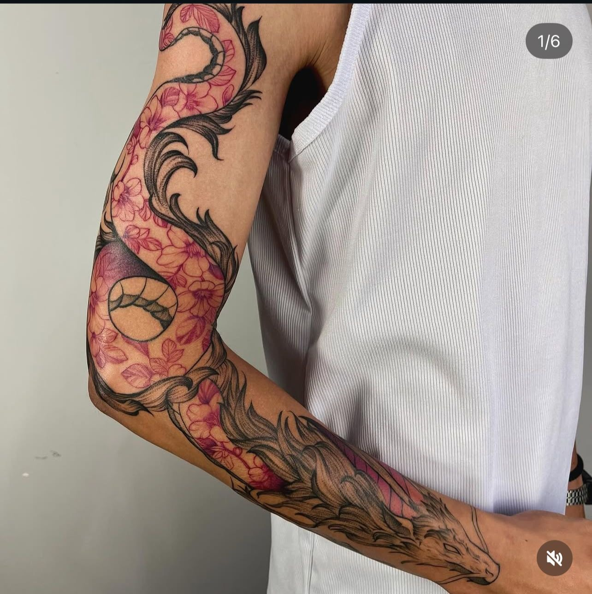
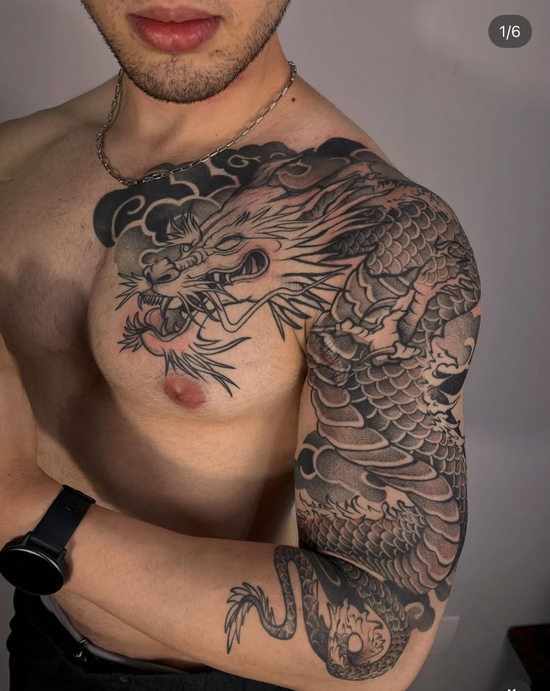
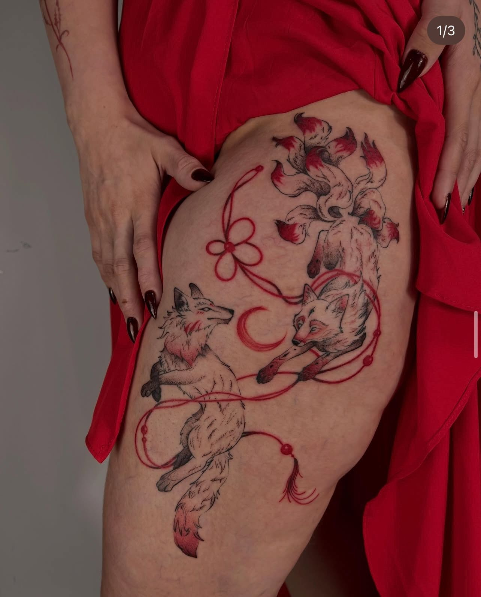
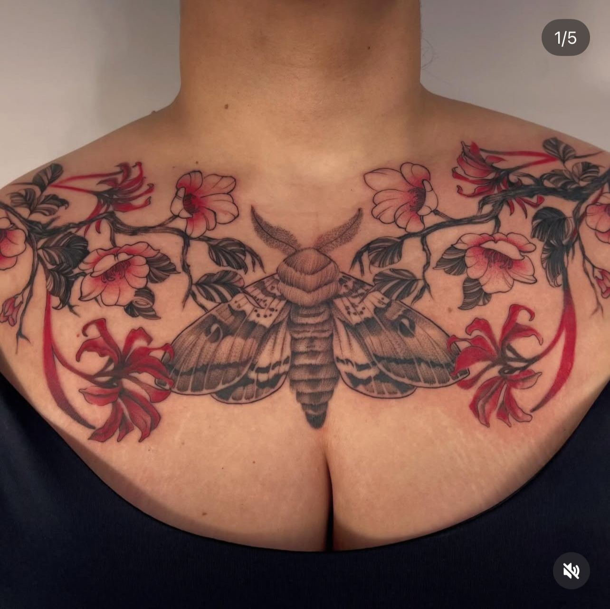

SARAH

Composição feita para o corpo e para o tempo
Trabalhos selecionados
2024 a 2026



A tatuagem começa antes da agulha.
- 01
Escuta
História, intenção, referências e o lugar da obra no corpo.
- 02
Composição
Desenho autoral construído com fluxo, contraste e anatomia.
- 03
Ritual
Execução precisa, ambiente seguro e acompanhamento da cicatrização.
Tem uma história pedindo forma?
Falar com Ítala no WhatsApp